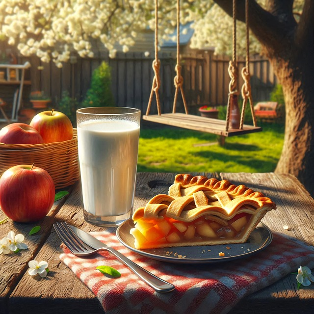

Bester Apfelkuchen EVER!  Dieser Kuchen ist der beste in der Stadt Article- egyedül is megálló elem Zutaten SECTION: valaminek a része 3 alma 300g liszt 1 tojás Zubereitung Leírás bla bla Nährwerte Für 100 gramm Kalorien Kohlenhydrate 250kcal 35g
Birnekuchen Lecker... Article- egyedül is megálló elem Zutaten SECTION: valaminek a része 3 alma 300g liszt 1 tojás Zubereitung Leírás bla bla Nährwerte Für 100 gramm Kalorien 200kcal Kohlenhydrate 45g